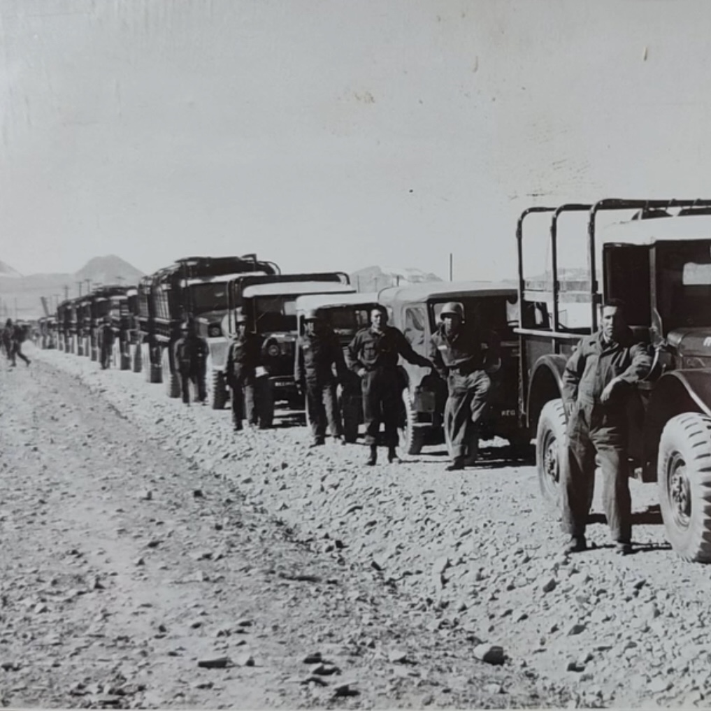
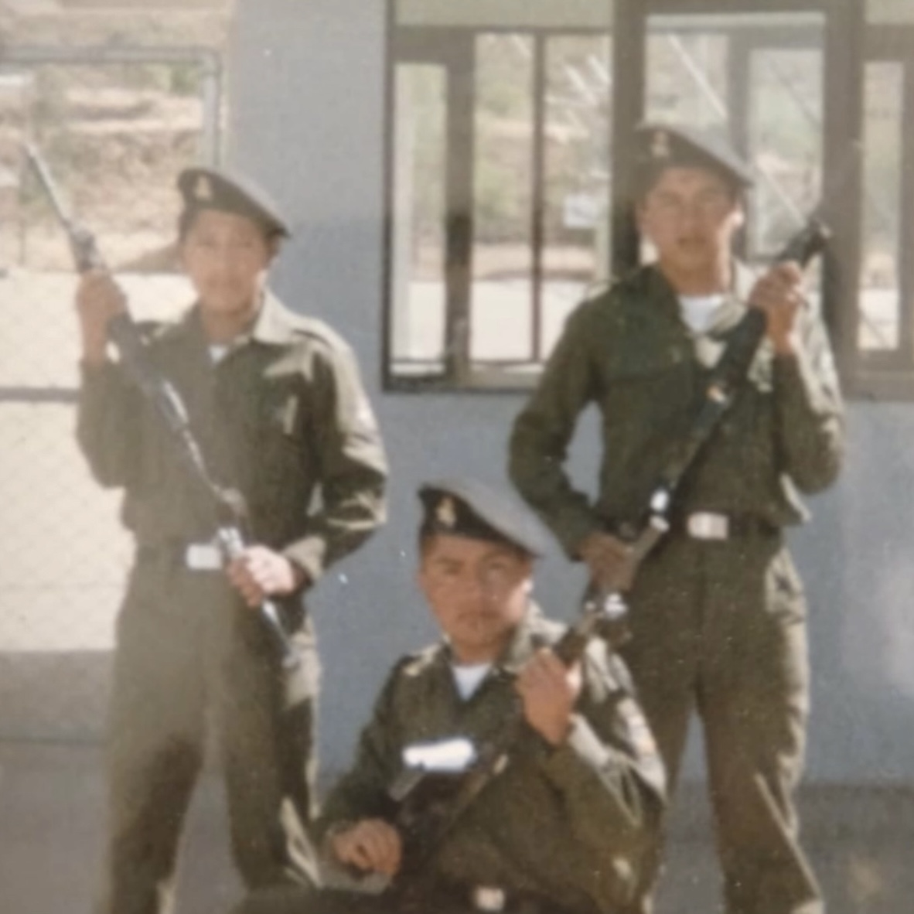
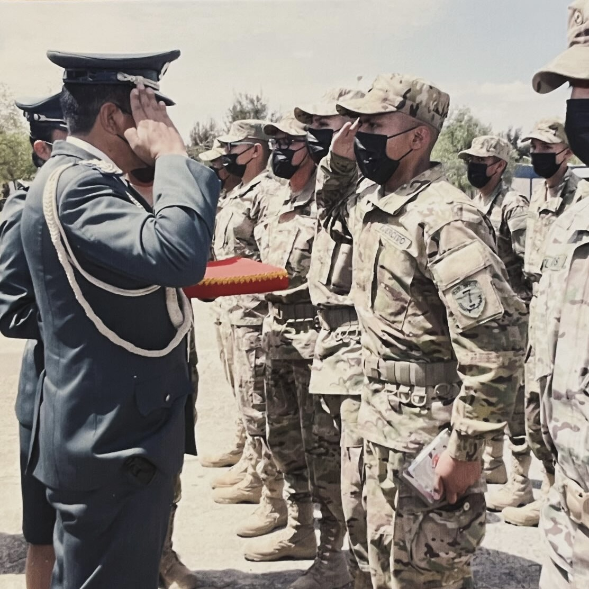

Political Economy at Georgetown University. Former unit in the Bolivian Armed Forces. Indigenous. First-generation, low-income student.
Serafín Burgulla served as a corporal in the Viacha Motorized Regiment between 1966 and 1967.
He was stationed with the “Caimanes” trucks and carried out two missions in the Ñancahuazú War.
The first time, he returned by plane. The second time, after “Che” Guevara had already been killed, he returned by land, driving a truck that was belching smoke. He liked to take photos and kept one next to his truck before setting off on what could be his last mission.
The barracks kept him there six months longer than he was supposed to be. When they refused to let him leave on his birthday, he responded with the stubbornness of a peasant: “I’m leaving anyway.”
Then almost immediately, he got married. Then came the dictatorships. But nobody came looking for him anymore. He became a minibus driver, trading war for the dry roads of Sipe Sipe.

Serafin Burgulla Rios served in the Artillery Regiment of the 7th Division of the Bolivian Army right after he finished high school. In the aftermath of the terrorism events and threats from armed groups to take over military factories, he volunteered to guard one of the most important factories in the country. He was in the army from 1989 to 1990.

Serafin Burgulla Marca served in the Infantry Regiment of the 7th Division of the Bolivian Army from 2021 to 2022. He specialized as a unit marksman and graduated in the Air Force base of Cochabamba. He is proud of his family on both sides, as his great grandfather was in the Bolivian Revolution of 1952, and inherited him an old, non-functional rifle from the era. He holds this legacy of service as a source of motivation and resilience.
